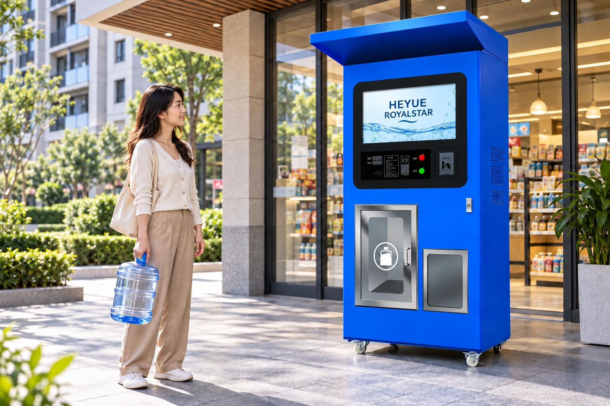
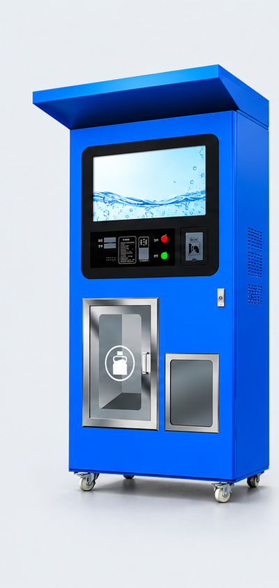
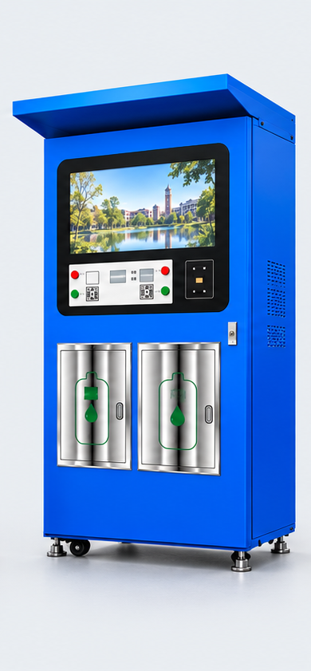
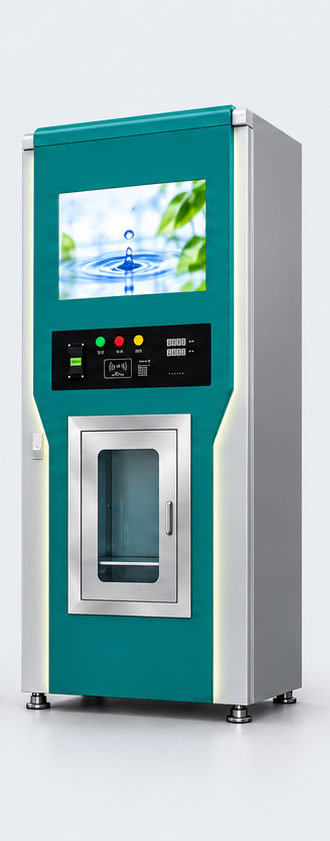
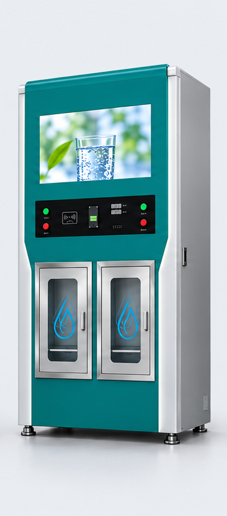
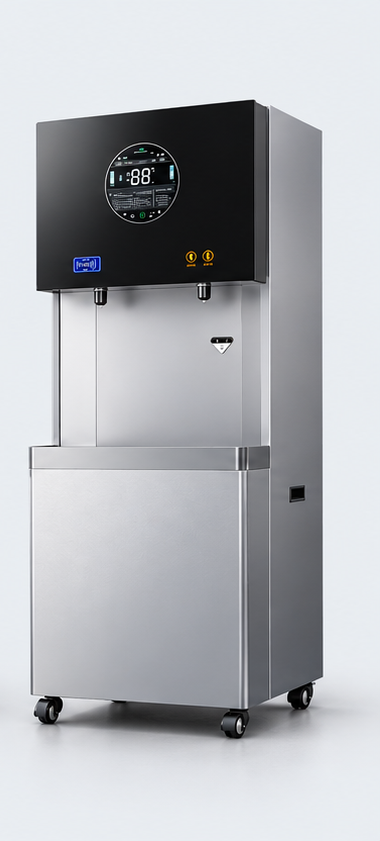
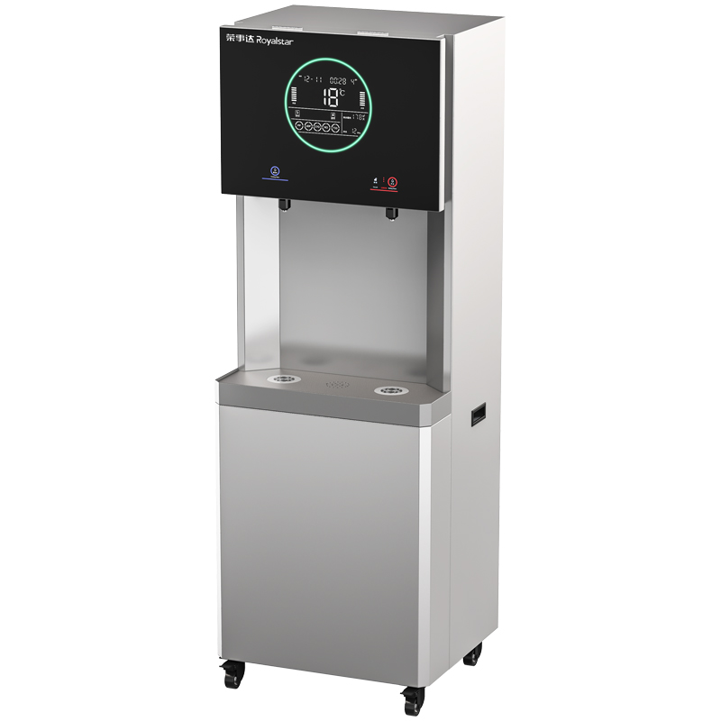

Community refill
Residential developments and neighborhood refill points. Consider peak demand, filling positions and local payment compatibility.
Explore how community refill points, workplaces and institutional projects shape the selection of drinking water equipment.
Explore the product demo ↗
A B2B product journey should help buyers find equipment by its intended use before comparing individual specifications.
Residential developments and neighborhood refill points. Consider peak demand, filling positions and local payment compatibility.
Offices, hotels and staff facilities. Match dispensing temperatures, footprint and maintenance access to daily routines.
Schools, factories and public buildings. Evaluate occupancy, feedwater conditions and distribution arrangements.
Filter this demonstration catalogue by application.
6 products shown

A single filling position for neighborhood refill points and retail water vending.
2 L/min · 150 L storage
Two dispensing positions for shared refill locations. Assess production and storage against peak demand.
2 L/min · 2 × 150 L storage
An outdoor-format water vending machine for community and residential applications.
RO filtration · Single filling position
A dual-position refill format for residential communities and public-access refill points.
2 L/min · 2 × 130 L storage
Ambient and chilled drinking water for offices, hospitality spaces and staff facilities.
5-stage RO · 400G designation · 6 gal pressure tank
A project drinking-water dispenser for schools, factories, offices and public facilities.
5-stage RO · Boiled and purified water outletsSelected specifications are reproduced from supplied product materials for this learning demonstration. Illustrative scenes are not customer installation records. Final equipment selection requires confirmation of operating conditions and the ordered configuration.
This exercise explores semantic HTML, responsive CSS, small JavaScript interactions, Git version control and static deployment.
The commercial website and its administration system are separate from this public coursework.
Visit the commercial website ↗